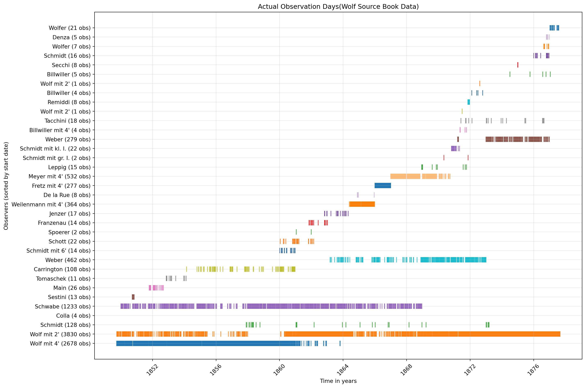

==================================================
OBSERVER STATISTICS (WOLF SOURCE BOOK) SUMMARY
==================================================
Total unique observers: 35
Observation period: 1849-09-30 00:00:00 to 1877-08-31 00:00:00
Total observation span: 27.9 yearsSource Book Data
Source book : Along with Mittheilungen, the source books of Wolf were found in loose, unbound form in 2015. Before his discoveries were printed in the Mittheilungen, Wolf first documentd them in these source tables. Source books offer a lot of supplemetary material.
- Observers on particular days, their k-factors and sunspot_observations
- Details of observers data used to fill out gaps on Wolf’s data.
- Contain additional observers before 1849, which are not published in Mittheilungen.
- Contain only 2 instances of Wolfer’s observations
- Source books revealed that Wolf interpolated the records to fill in gaps in the observations hed could not make.
Timeline of the observers
Figure 1 is a timeline showing the start and end date of observations of the observers in the source book. X-axis is time in years, and in Y-axis we have observers sorted by start date, and number of observations for each observer is shown in the parantheses.

Bubble plot of the observers
Figure 2 is a bubble plot showing all observers in the source book. X-axis is start date, Y-axis is end date, size of the bubble is the number of observations, color is the number of observation years, hover name is the alias, and text is the alias.
Animated bubble plot of the observers
Figure 3 is similar to Figure 2 but with animation over the start year.